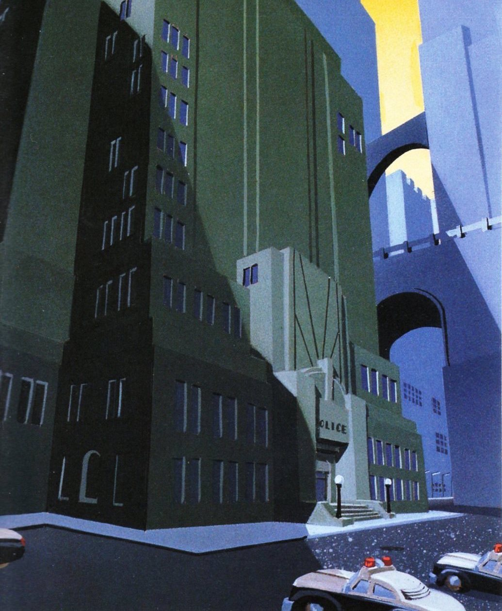

Gotham City
|
Mayor Hamilton Hill
311
PUBLIC NOTICES
DEPARTMENTS
HOME
>
DEPARTMENTS
>
POLICE
GCPD
The Gotham City Police Department is dedicated to working in partnership with the community to fight crime. We work to improve the quality of life in our neighborhoods.
PUBLIC RECORDS REQUEST
DEPARTMENTS AND PERSONNEL
JAMES W. GORDON
Police Commissioner
Biography
HOMICIDE DIVISION
Led by former private investigator James Bard, this department addresses murders and non-metahuman crimes in Gotham.
MAJOR CRIMES UNIT
Led by Capt. Maggie Sawyer, this department handles the most serious crimes, often involving supervillains or politically sensitive cases.
QUICK RESPONSE TEAM
Led by L.t. Gerard Hennelly, this department provides immediate response using specialized or military equipment and tactics.
CONTACT
911
gcpd@gotham.gov
3123 Lincoln Place
Gotham City, NJ 65779
United States
